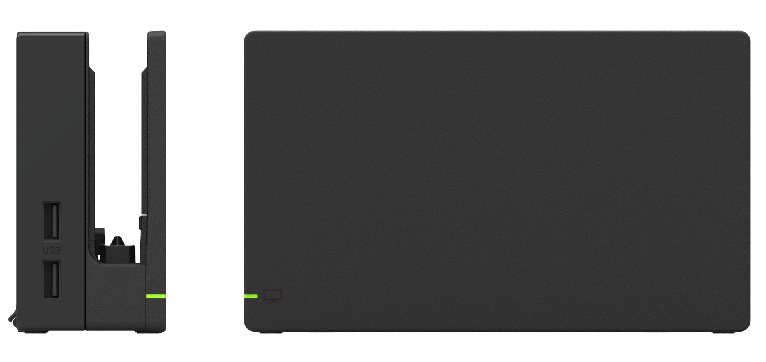
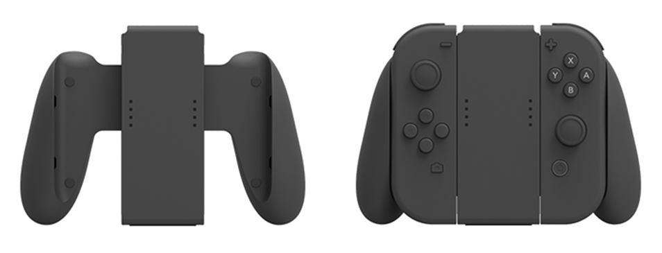
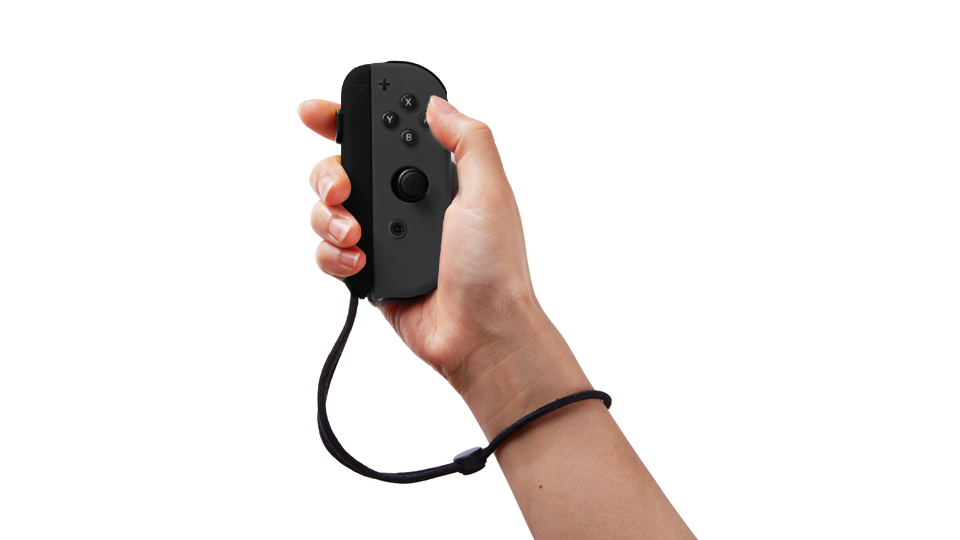
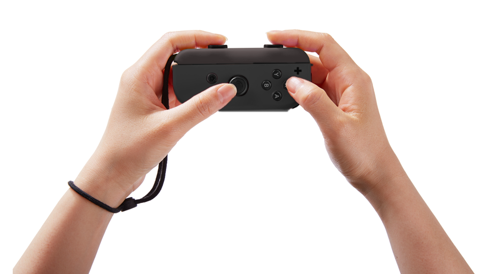
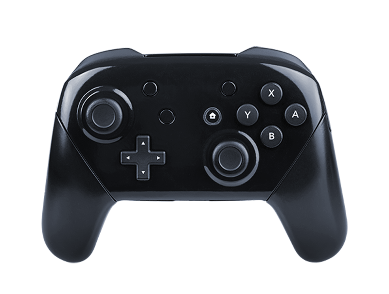

The NX dock is a bundled device that is used to have the NX operate as a console gaming device.
In addition to offering HDMI output to a TV (for video and audio), it also recharges the NX.
The main features of the NX dock are as follows.
| Component Name | Description |
|---|---|
| System connection terminal | A USB connector (Type-C shape), for connecting the NX to the NX dock when docked. |
| AC adapter connector | A USB connector (Type-C shape) for connecting the NX dock to the AC adapter. |
|
HDMI connector |
A terminal to connect an HDMI Type-A cable to connect the NX dock to the TV. |
| USB ports |
A terminal to connect accessories. Includes two USB 2.0 Type-A terminals and one USB 3.0 Type-A terminal. Note: It cannot be used from the application. |
| TV output plug | An LED that indicates that images are being output to the TV. |
Due to heat generated when the device is held in the hands, NX-SoC performance will be different when the system is docked in the NX dock and when it is removed. Details are under evaluation.
The following features are enabled when the NX is removed from the NX dock.

The left and right JOY-CON controllers snap in to the classic-grip accessory to enable players to securely handle them as one controller in both hands. The classic-grip accessory is bundled with the system. This is not the electronic specification.
In addition, there is also a classic-grip accessory with charging function that includes a charging function, but it is not included with the system. The classic-grip accessory with charging function has a USB connector (Type-C shape), and a USB cable can be connected to charge the JOY-CON controllers.
 
The JOY-CON strap can be attached to the rail on the side of the JOY-CON.
This strap makes it easier to hold the JOY-CON and makes it safer when the controller is being waved around. It also makes it easier to press SL and SR when the JOY-CON is held horizontally.
An adapter, bundled with the system, that provides the NX console and NX dock with power.
The console and NX dock use a USB connector (Type-C shape).

The NX Pro Controller is a wireless controller with the same number of buttons as the controller part of the NX system in handheld style. Its design focuses more on being easy to hold and operate than the JOY-CON, and is intended to be used when a single player wants to take their time playing through the game. It is not included with the system.
This controller may be connected with the NX system by a wireless connection and used instead of the JOY-CON. However, the supported device features and the number of features may differ from the JOY-CON. For more information, see Table 3-5 Comparison of Full Key Controller and the Devices Provided by the JOY-CON. Although the JOY-CON has independent directional input buttons for up, down, left, and right, the NX Pro Controller has a +Control Pad. It is possible to simultaneously input left + right or up + down on the JOY-CON, but not on the NX Pro Controller. Be careful of this difference when implementing applications.
Up to eight controllers can be connected to one NX system at the same time, including JOY-CON controllers.
| Component Name | NX Pro Controller | JOY-CON (left and right set) |
|---|---|---|
| Accelerometer and gyro sensor | 1 | 2 (1 in each left/right JOY-CON) |
| Linear resonant actuator | 2 | 2 (1 in each left/right JOY-CON) |
| NFC Reader/Writer | Yes | Yes (only in right controller) |
| IR sensor | None | Yes (only in right controller) |
| Buttons for directional input |
+Control Pad |
Directional buttons (independent buttons for up, down, left, and right) |
These Game Cards are dedicated NX game cards. They are different in shape from previous Nintendo platforms and are not compatible. There is no backup device, and save data is saved to the system memory.
Capacity variations include 1 GB, 2 GB, 4 GB, 8 GB, 16 GB, and 32 GB.
There are retail and development versions of the NX game cards. For more information about the capacity of the NX game cards for development, see 8 Development Environment.
CONFIDENTIAL